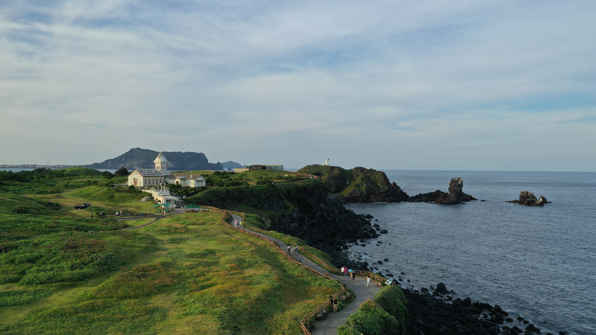

제주에 첫발을 디딜 때, 운이 좋다면 가장 먼저 눈에 띄는 것은 멀리 한라산이 거대한 덩치를 뽐내며 웅장한 자태로 솟아있는 모습이다. 날씨가 그리 썩 좋지 않더라도 비행기창을 통해서나 배갑판 위에서 바라 보았을 때 희뿌연 안개낀 제주섬 위로 봉긋 솟아 있는 한라산의 모습은 과연 환상의 섬 제주 이런가 하는 것을 새삼 느끼게 한다.
봄소식이 제일 먼저 찾아오는 제주. 뭍에서는 찬바람 씽씽 불어오는 추운 겨울날 이미 제주의 봄은 시작되었을 터. 하지만 봄이 가장 먼저 시작되는 제주라 할지라도 바람센 제주에서 제법 봄의 정취를 느끼기에는 노란 유채꽃이 피어올라야만 비로소 실감할 수 있다. 화려한 유채꽃이 한창인 명소는 제주도 어디에서나 볼 수 있지만, 그 중 한라산 동편, 즉 제주동쪽 해안의 섭지코지는 기막힌 해안절경과 흐드러지게 피어난 노란유채꽃밭의 어우러짐으로 4월 제주 기행에 있어 빼놓을 수 없는 풍광을 보여준다. 지척에 너무도 잘 알려진 경승지 성산일출봉이 코 앞에 있어, 봄날 섭지코지의 아름다움이 그 빛이 덜하지만 차라리 그덕에 한적함과 낭만적인 멋이 더욱 풍겨나는 이곳이 여행자들에게는 더 오래도록 기억에 남을 것이다.
섭지코지는 코지(코지곶을 의미하는 제주 방언)라는 지명에서 알 수 있듯 코의 끄트리 모양 비죽 튀어나온 지형이다. 위치상으로는 서귀포시 성산읍 신양리 해안에 돌출되어 있다. 외지인들에게는 찾아가기가 그리 쉽지는 않은데 대개의 경우 신양리 해안 국도변에서 마을로 진입하여 이정표를 보고 콘크리트로 포장된 길을 따라가면 코지 끝에까지 이를 수 있다. 또는 서귀포 방면에서 찾아온다면, 표선시내를 지나 약 7km 쯤 가서 우측으로 해안도로 표지판이 나오면 여기서 우회전하여 줄곧 바다를 끼고 정면으로 섭지코지 전경을 바라보며 달리다가 이내 신양해수욕장 백사장이 보이고 마을 앞에 이르러 우회전, 마찬가지로 콘크리트 도로를 따라가면 된다.
신양리 마을을 지나면서 우측으로는 깨끗하고 고운 모래밭 정경이 인상적인 신양해수욕장의 한가로운 풍경이 나란히 한다. 널찍한 곳에 이르러 주차관리소가 나오면 여기서 코지 가는 길이 두 갈래로 나뉜다. 좌측 길은 코지 북쪽해안을 끼고 달리는 길로 약 1.5km의 구간 내내 제주 특유의 검은돌 해변과 넘실대는 바다 너머로 거대한 성산 분화구의 웅장한 모습을 바라보면서 달리는 길이다. 반면 코지 남쪽해안인 우측 길을 따르면 중간중간 노란 유채꽃들도 보이고 혹은 언덕위 풀밭에서 유유자적 풀을 뜯는 제주 조랑말의 목가적인 풍경도 눈에 띄는데 약 2.5km쯤 가면 길은 끝나고 드넓은 제주 바다를 대면하게 된다. 한편 이 남쪽해안길 끝은 넓은 광장으로 되어 있으며 주변에 횟감이나 어패류 등의 해산물을 파는 간이상점들이 늘어서 있어 풍경을 감상하며 식도락을 즐길 수도 있다. 하지만 섭지코지 여행의 으뜸은 단연 코지 끝 언덕위에 올라 눈이 부시게 피어난 유채밭 사이를 거닐면서 섭지코지의 해안 절경과 눈앞에 보이는 거대한 코끼리 모양의 성산 일출봉의 장관을 함께 마주하는 것이다.
특히 이곳의 유채꽃은 밝은 햇살과 푸른 바다빛과 어울려 그 어느 곳에서보다 더욱 선명하고 고운 빛깔을 띄고 있다. 넓고 평평한 코지언덕 위에는 옛날 봉화불을 지피던 협자연대라는 돌로 만든 봉수대가 세워져 있는데 높이 약 4m, 가로세로 9m의 정방형으로 비교적 원형대로 보존되어 있다.연대에서 동북 방향으로 솟아있는 봉우리는 일명 붉은오름으로, 제주말로 송이라고 하는 붉은색 화산재로 이루어진 오름인데, 정상에 서있는 하얀 등대의 모습이 노란 유채 꽃밭과 오름의 붉은 흙빛, 그리고 파란하늘빛, 바다빛과 대비되는 또다른 이국적인 정취를 불러 일으킨다. 등대까지는 철계단이 마련되어 있어 쉽게 올라갈 수 있으며 등대 난간에 올라서면 과연 기가막힌 섭지코지의 해안절경이 바로 코 앞에 펼쳐진다. 그 중 절벽아래로 보이는 촛대 모양으로 삐죽 솟은 바위는 용왕의 아들과 하늘나라 선녀에 대한 슬픈 짝사랑의 전설이 담긴 선돌로, 하늘을 향해 치솟은 족한 정수리에 온통 갈매기 배설물로 허옇게 덮여있는 것이 마치 사람이 흰 눈을 이고 있는 듯한 모습이어서 더욱 시선이 끌린다.
붉은오름 위에서는 성산일출봉 뿐만 아니라 섭지코지의 전경을 한 눈에 바라볼 수 있다. 더욱 유채꽃이 한 4월 제철을 맞은 여기 넓은 들한복판에 서면 자신도 모르는 사이, 어느새 영화속의 주인공이 된듯한 착각에 빠질 수도 있을 것이다. 언덕에서 내려서는 길은 왔던 길을 되돌아 갈 수도 있지만, 차를 가지고 오지않았다면, 유채꽃밭 사이를 가로 질러 건너편의 코지 북쪽 길가로 내려서서 느긋하게 걸어 돌아와도 좋겠다. 다만, 코지 언덕 위에서 바다쪽으로는 위험한 절벽으로 되어 있어 실족치 않도록 유의하고 또한 등대 남쪽 황토 흙길 내리막에서도 미끄러지지 않도록 주의한다. 주차 관리소에 차를 세워두고 섭지코지를 한바퀴 돌아보는 데는 도보로 대략 1시간 30분 정도가 소요되며, 급하지 않다면 차를 타고 휙 지나치는 것보다는 소풍나온 기분으로 걸어서 산책을 즐기기를 권한다. 아울러 섭지코지 인근의 제주민속촌과 우도 등도 함께 둘러보면 좋다. 한편 제주도에서 가장 영화에 많이 등장한 곳은 섭지코지이다. 성산일출봉 옆에 있는 섭지코지에서 ‘단적비연수’, ‘이재수의 난’, ‘천일야화’, 드라마 ‘올인’ 등이 촬영됐다.
쉬는날
연중무휴
주차시설
주차 가능
문의 및 안내
제주관광정보센터 ☎(064)-740-6000
관련홈페이지
촬영장소
영화, 드라마 촬용지 - 단적비연수, 이재수의 난, 천일야화, 올인
입장료
무료
화장실
있음
ⓒ 2024 Design by YunJin